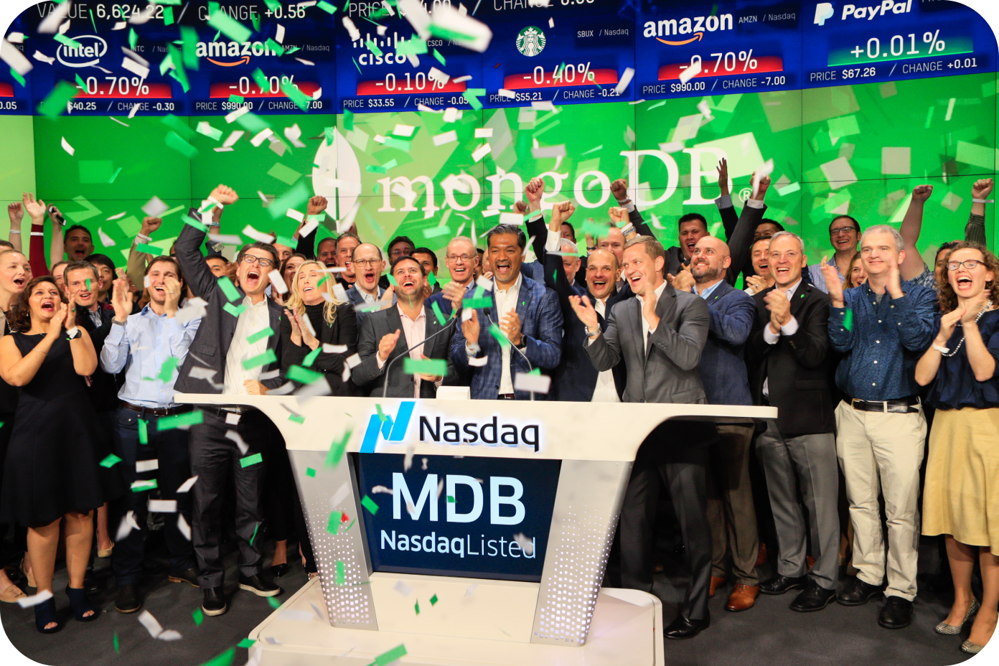
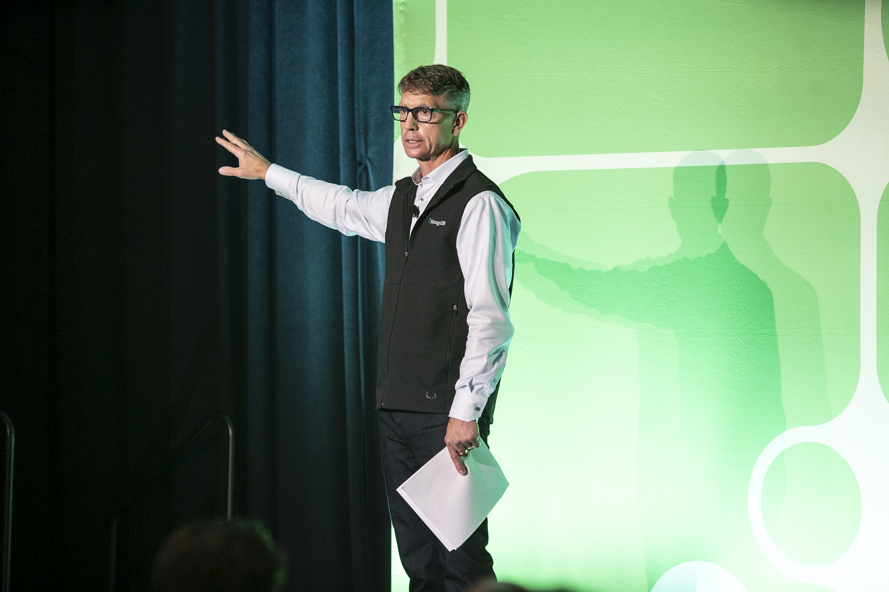
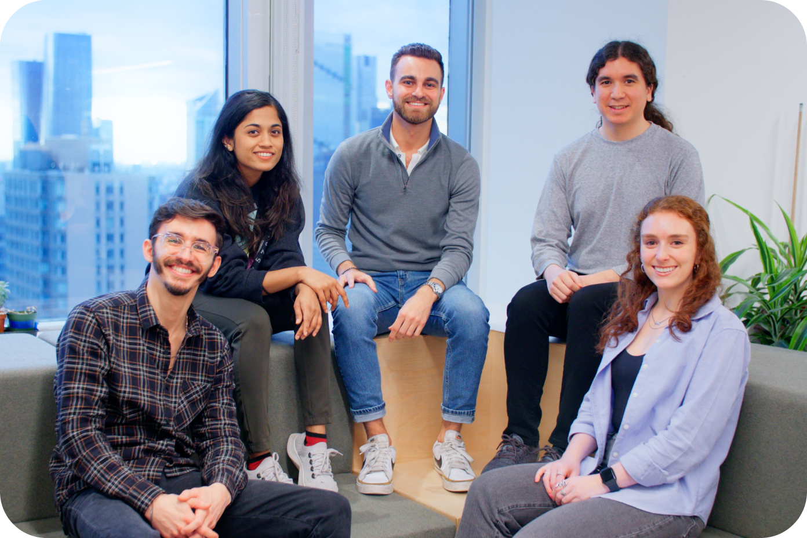
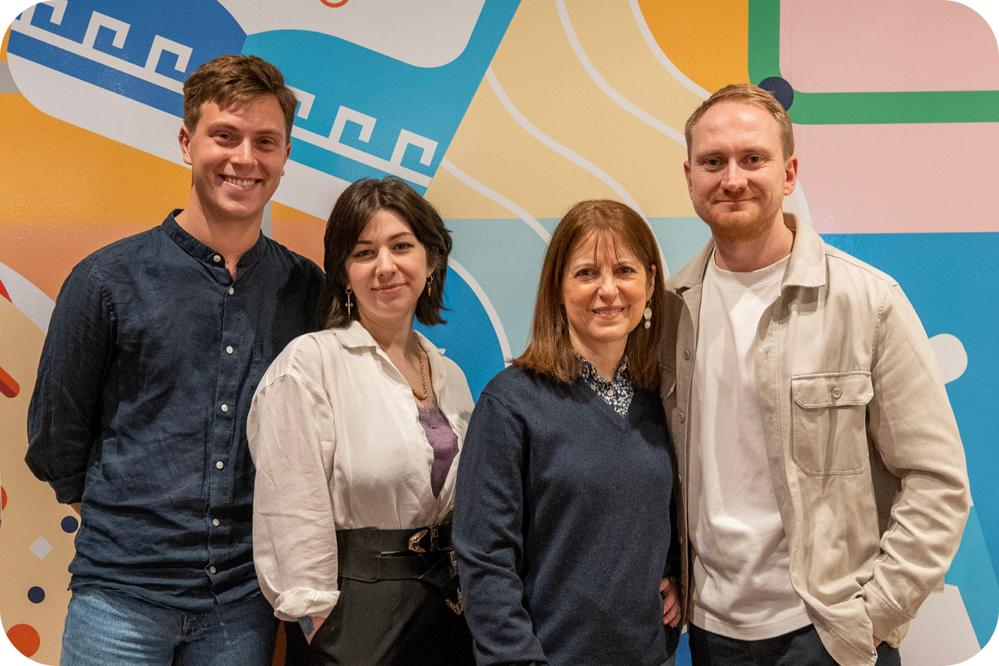

MongoDB empowers innovators to create, transform, and disrupt industries by unleashing the power of software and data.




Want to impact the future of technology? Take a look at our teams and open roles, and let us know which excites you the most.
With MongoDB’s student intern and graduate programs, you get access to unique career development opportunities and world-class mentors. See why MongoDB is the best place to begin your career.
Inclusion is core to all that we do, from interacting with customers and communities to supporting users and our team members. We ensure MongoDB is a place where people of all backgrounds can build their careers.
Our culture blog focuses on what’s going on inside and outside MongoDB. Learn about who we are.
Our mission is to give builders the tools they need to create the next generation of intelligent applications.
Our global partner ecosystem links clients to innovative tech and services, accelerating creation of transformative gen AI applications.